地政学
ビエンチャンはメコン川を挟んでタイと向き合い、中国、ベトナム、タイを結ぶ内陸国ラオスの首都です。外交、援助、鉄道、電力、国境貿易が交差し、静かな官庁街にも地域秩序の変化が表れています。橋も要所です。
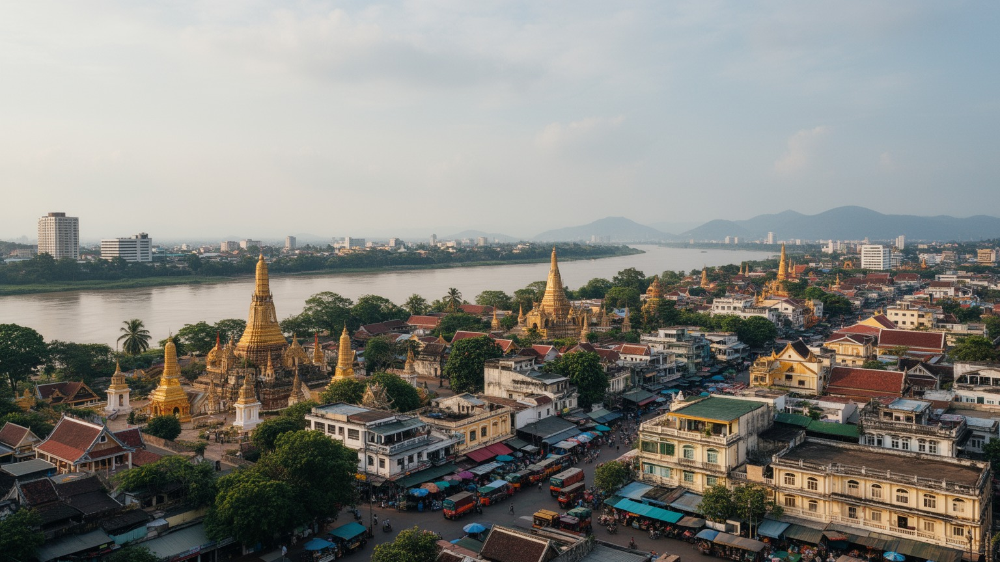
🇱🇦 ラオス / アジア / World City Atlas
メコン川沿いのラオス首都です。仏塔と寺院、行政、国境貿易、観光、援助機関、鉄道開発、穏やかな街路生活が重なる小さな首都です。
都市の骨格
ビエンチャンは大都市の密度よりも、首都機能、仏教儀礼、タイとの国境、援助と投資、鉄道開発、川辺の夕涼みが近い距離で見える都市です。静かな街路の背後に、内陸国ラオスの進路が刻まれます。
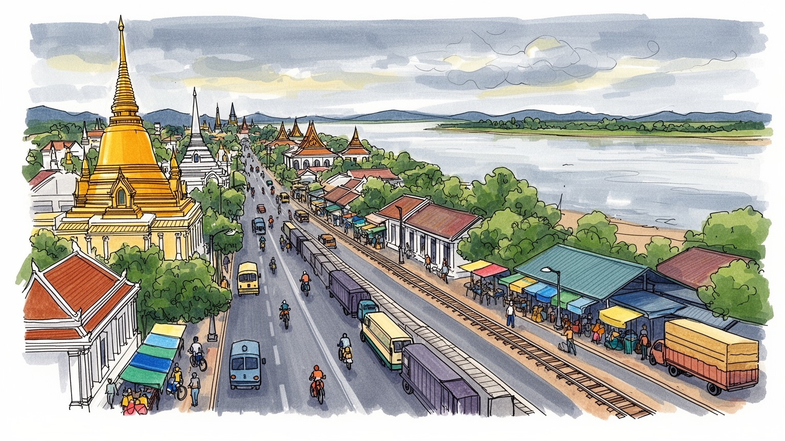
ビエンチャンはメコン川を挟んでタイと向き合い、中国、ベトナム、タイを結ぶ内陸国ラオスの首都です。外交、援助、鉄道、電力、国境貿易が交差し、静かな官庁街にも地域秩序の変化が表れています。橋も要所です。
行政、観光、物流、建設、食品加工、小売、教育、国際機関が雇用を作ります。大工場都市ではありませんが、地方から来る若者、国境商人、ホテル従業員、配車運転手が首都経済を支えています。送金も都市を支えます。
タート・ルアン、ワット・シーサケット、僧院、精霊信仰、托鉢、年中行事が生活の時間を整えます。ラオ語、仏教、王国期の記憶、フランス植民地期の街路が、首都の柔らかな文化層を作ります。祭礼も街を整えます。
川辺の遊歩道、ナイトマーケット、仏塔、凱旋門、カフェを巡る観光の横で、住民は学校、屋台、寺院、官庁、郊外住宅を行き来します。暑熱、雨季の浸水、交通、物価が日常の実感です。医療、家賃、浸水も課題です。
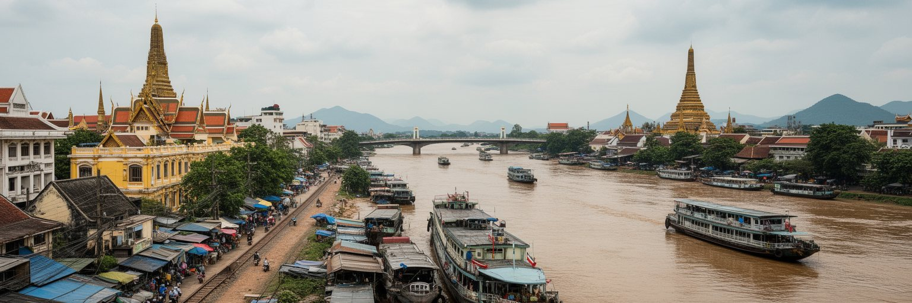
ビエンチャンはメコン川の左岸に広がり、対岸のタイ東北部ノーンカーイを日常的な視界に入れて暮らす首都です。川は国境であり、夕涼みの場所であり、物流と観光の舞台でもあります。乾季には河原が広がり、雨季には水位が上がって街の排水や低地の暮らしに影響します。友好橋を渡る人と物の流れは、ラオス経済がタイ市場、港湾、医療、教育、消費財に深く依存していることを示します。一方で、首都の政治的な向きはタイだけでなく、中国、ベトナム、ASEAN、国際援助へも開かれています。メコン沿いの遊歩道や市場を歩くと、国境が緊張線だけでなく、商売、家族、旅行、労働移動を支える生活圏であることが分かります。都市の規模は大きくありませんが、川を挟む位置は内陸国の弱さと柔軟さを同時に見せます。物流を外へ頼る首都は、橋、道路、鉄道、通関、為替、燃料価格の変化に敏感です。ビエンチャンの地理を読むことは、川辺の穏やかな風景の中に、国家の開放度と脆さを読み込むことです。メコンは都市を外へつなぎ、同時に水害と国境管理を意識させる基盤です。さらに川は、首都住民が自国の位置を身体で感じる場所でもあります。対岸の明かり、国境を越える買い物、橋を渡る貨物、夕方の散歩が重なり、国家境界と日常生活が同じ景色に収まります。橋の混雑も暮らしに響きます。
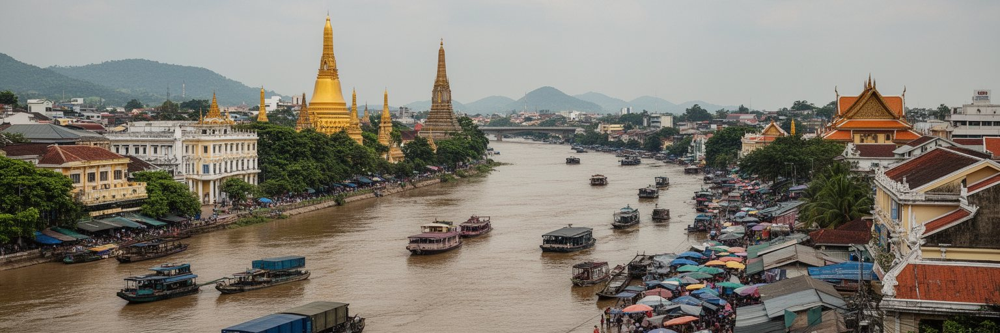
ビエンチャンには政府機関、党と行政の拠点、各国大使館、国際機関、援助機関、教育機関が集まり、ラオスの政策決定が日常の距離で見えます。高層ビルが林立する首都ではありませんが、道路整備、電力開発、債務、保健、教育、農村支援、国境管理など、国の進路を左右する議題がここで調整されます。社会主義国としての制度、仏教文化、近隣大国との関係、開発援助の条件が重なり、行政の言葉は住民の暮らしにも届きます。地方の人にとって首都は、大学、病院、役所、就職、商売の窓口であり、国家と接触する場所です。外交の場面は会議場や官庁に閉じず、道路名、記念建築、援助で建てられた施設、外国語の看板、ホテルの会議客として街に現れます。ビエンチャンを読むには、静かな大通りの背後で、誰の資金で何が造られ、どの地域が優先され、どの住民が公共サービスへ届きやすいのかを見る必要があります。首都行政は遠い制度ではなく、移住、土地、学校、診療、許認可、税、交通規制として生活の具体的な場面に現れます。小さな首都だからこそ、国家の決定と住民の距離が近く見えます。国際会議や公式訪問のたびに、道路の警備、ホテル需要、通訳、車列、報道が街を動かします。首都の静けさは、外部との交渉が少ないことではなく、制度が低い密度の都市へ染み込んでいることを示します。
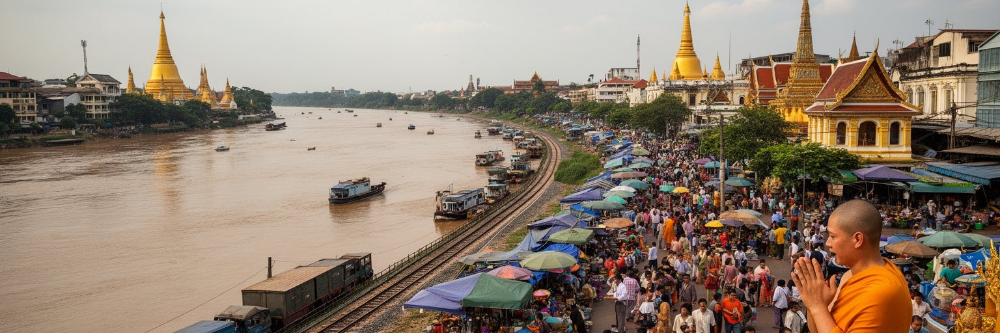
ビエンチャンの都市生活は、タート・ルアンを中心とする仏教儀礼、僧院、托鉢、祖先への祈り、精霊信仰の気配によって深く形作られています。金色の仏塔は国家の象徴であると同時に、住民が祝祭、寄進、家族の節目を重ねる場所です。ワット・シーサケットやワット・ホーパケオのような寺院は観光資源である前に、学び、相談、葬送、地域の記憶を支える公共空間です。朝の托鉢、仏教行事、僧院での読経、家の小さな祭壇は、急速な開発の中でも都市の時間を整えます。ラオスの信仰は制度的な仏教だけでなく、土地や家族を守る精霊への感覚とも結び、都市の暮らしに柔らかな層を作ります。観光客が寺院を訪れる時、建築の美しさだけでなく、そこが日常の祈りと学びの場所であることを意識する必要があります。ビエンチャンの宗教性は、巨大な巡礼都市の熱気ではなく、ゆるやかな時間の中で人を結び直す力として現れます。祝祭の日には地方からも人が集まり、首都は政治だけでなく信仰の中心になります。祈りの場が街路、市場、学校、家族の時間をつなぐ点に、この都市の落ち着きがあります。僧院は地方出身の若者が学ぶ入口にもなり、都市で孤立しがちな人を支える場にもなります。信仰は過去の形式ではなく、変化の速い首都で生活を整える現在の仕組みです。寄進は近所の関係も結びます。
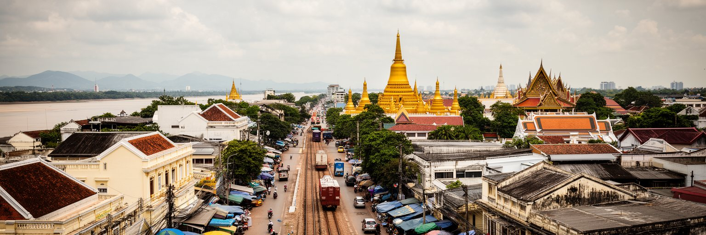
ビエンチャンの街路には、ラオス王国期の寺院、フランス植民地期の区画、独立後の官庁、近年のホテルや商業施設が重なっています。パトゥーサイは凱旋門の形を借りながら、ラオス独自の装飾と国家の記憶をまとい、中心軸の象徴になっています。広い道路と低層の建物、木陰の多い通り、川辺の市場は、東南アジアの巨大都市とは違う速度を感じさせます。しかし穏やかな景観の背後では、土地価格の上昇、ホテル開発、郊外化、駐車場化、古い建物の更新が進みます。植民地期の建築を保存することは、単に懐かしい外観を残すことではありません。そこに住んだ人、働いた人、行政の制度、教育、宗教、商売の変化を読み取ることです。観光向けに整えられたカフェや宿が増えるほど、住民のための市場、路地、安い食堂、寺院への道が失われないかも問われます。ビエンチャンの都市景観は、派手な高層化よりも、低層の街路に積もる歴史をどう扱うかで価値が決まります。新しい建物が増えても、歩ける距離、木陰、寺院の前の余白、川へ抜ける道が保たれれば、首都の静かな性格は残ります。景観の保全は、観光のためだけでなく、住民が都市を記憶できる権利でもあります。古い街区を丁寧に使い続けることは、経済発展と矛盾しません。むしろ都市の個性を失わず、急な開発で生まれる空白を避けるための実務でもあります。
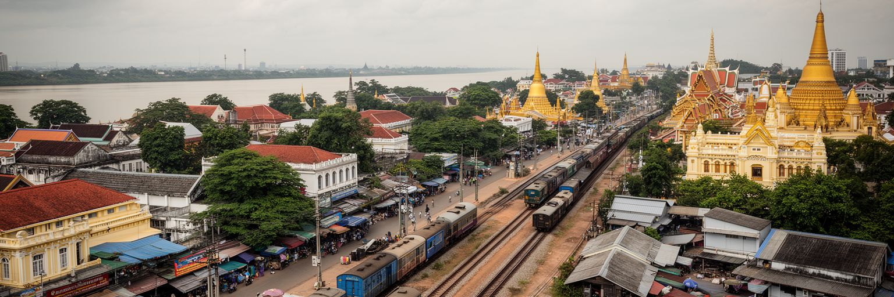
中国ラオス鉄道の開通は、ビエンチャンの地理的な意味を大きく変えました。山がちな内陸国ラオスにとって、鉄道は中国雲南、国内北部、首都、タイ側の市場を結ぶ新しい背骨です。旅客は観光や帰省を速くし、貨物は農産物、鉱産物、工業品、建材の流れを変えます。ビエンチャン南駅や物流施設は、首都を単なる行政都市から、内陸物流の結節点へ近づけています。一方で鉄道は債務、土地取得、駅周辺開発、運賃、地域間格差、輸入品との競争という課題も伴います。沿線に機会が生まれても、技能や資本を持つ人ほど利益へ近づきやすく、小規模商人や農民が十分に接続できるとは限りません。タイ側の港湾や市場へどうつなぐか、通関をどれだけ簡素にできるかも重要です。ビエンチャンの鉄道化を読むには、駅舎の新しさだけでなく、誰が列車に乗れ、何が運ばれ、どの土地が上がり、どの雇用が生まれるのかを見る必要があります。内陸国が陸路で外へ開く可能性は大きいですが、公共性を欠けば利益は一部に偏ります。鉄道は国家の夢であり、生活費と働き方を変える現実のインフラでもあります。駅周辺に倉庫、ホテル、住宅、商業地が増えれば、首都の重心も少しずつ動きます。移動が速くなるほど、地元の店や農産物がどう競争し、どの地域が取り残されるかも見えやすくなります。駅前の地価も動きます。
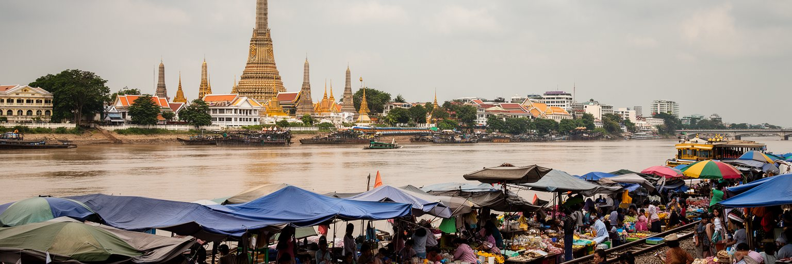
ビエンチャンの日常は、朝市、屋台、川辺の夜市、小さな食堂、家族経営の店に支えられています。メコン沿いでは夕方になると散歩、運動、食事、買い物、観光が重なり、住民と訪問者が同じ岸辺を使います。ラープ、カオニャオ、麺、焼き物、コーヒー、果物、川魚の料理は、首都の食卓と地方の農村を結びます。市場は観光客にとって色彩豊かな場所ですが、住民にとっては価格、仕入れ、現金収入、近所の情報交換を支える実用的なインフラです。国境を越えて入るタイ製品や輸入品は豊富さを生む一方、為替や燃料価格の変動を生活費へ直接伝えます。屋台や露店は都市の安い食と雇用を支えますが、道路管理、再開発、衛生規制、観光地化によって場所を失いやすい存在でもあります。川辺を整備する時、歩きやすさと美観だけを優先すれば、小商いと住民の夕涼みが追い出されます。ビエンチャンの市場を読むには、名物料理だけでなく、仕入れの朝、氷や水の供給、家族の手伝い、雨季の客足、店賃を見る必要があります。穏やかな首都の生活感は、こうした小さな商いが毎日続くことで保たれています。市場は地方から届く野菜や魚、国境を越えた商品、観光客の財布を一つの場所で混ぜます。価格の変化は家計にすぐ響き、商人の声は都市経済の体温を教えます。小さな店が街の会話と雇用を守ります。
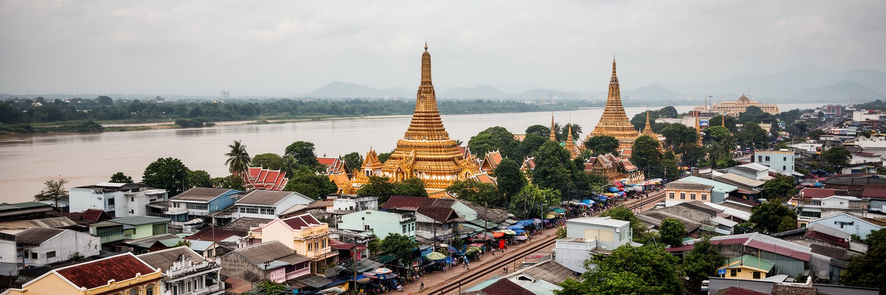
ビエンチャンの住まいは、中心部の低層住宅、ショップハウス、寺院周辺の古い街区、郊外の分譲地、農地の近くに広がる新しい住宅が混じり合っています。人口規模は大きくありませんが、首都機能、大学、病院、商業、国際機関が集まるため、地方から学びや仕事を求める人が流入します。中心部は役所、市場、学校、病院に近い一方、家賃や土地価格が上がり、若い世帯や低所得者は郊外へ住む傾向があります。郊外化は広い家や新しい生活を可能にしますが、公共交通の弱さ、通勤時間、燃料費、道路の安全、排水、学校への距離を問題にします。雨季の浸水や暑熱は、住宅の質と立地によって負担が大きく変わります。家族のつながりが強い社会では、住まいは個人の空間だけでなく、親族の滞在、送金、介護、商売、祭礼の拠点にもなります。ビエンチャンの住宅問題を読むには、建物の新しさではなく、誰が職場へ通いやすく、誰が水害から守られ、誰が医療や教育へ届くかを見る必要があります。低密度の穏やかさを保ちながら、歩道、公共交通、排水、手頃な住宅を整えられるかが、首都の暮らしやすさを左右します。郊外に住む人ほどバイクや車に頼り、燃料費や事故のリスクを負います。住宅開発が進むほど、学校、診療所、市場、公園を同時に整える必要があります。通学路と夜道の安全も重要です。
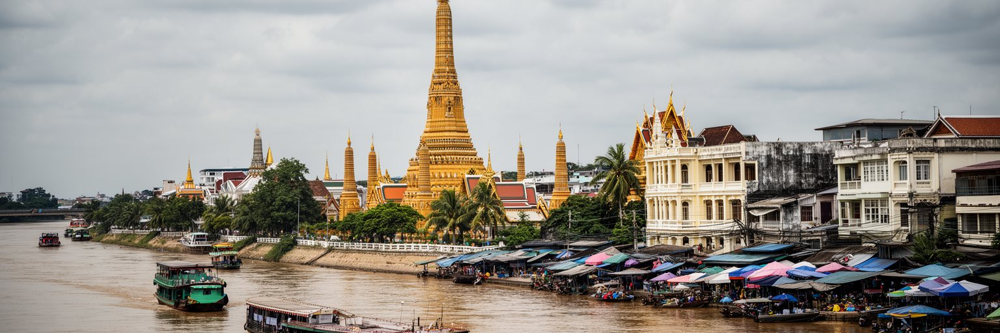
ビエンチャン観光は、タート・ルアン、ワット・シーサケット、ワット・ホーパケオ、パトゥーサイ、メコン川辺、夜市、郊外のブッダパークを組み合わせて、ラオスの首都をゆっくり読む入口になります。世界的な大観光地ほどの規模はありませんが、寺院、街路、食、川辺の時間が近く、短い滞在でも都市の輪郭をつかみやすい場所です。観光はホテル、飲食、案内、土産物、交通に収入を生み、若い人の語学やサービス業の機会を広げます。一方で、観光客向けの店が増えすぎると、住民が使う市場や安い食堂、静かな寺院の環境が変わります。宗教施設を訪ねる時は、服装、写真、声の大きさ、寄進の作法に配慮が必要です。フランス植民地期の街路や建物は魅力的に見えますが、その歴史には支配と制度の記憶も含まれます。ビエンチャンの遺産を読むには、名所を点で巡るだけでなく、寺院から市場へ、凱旋門から官庁街へ、川辺から国境へ歩いて、空間同士の関係を見ることが大切です。観光の価値は、訪れる人が静かな都市の深さを学び、住民の生活場所を尊重できるかで決まります。小さな首都だからこそ、旅の態度が都市の空気に直接触れます。急いで消費するより、朝の寺院、昼の市場、夕方の川辺を時間帯ごとに見る方が、首都の厚みを理解できます。静けさを尊重する旅が、この都市の魅力を守ります。
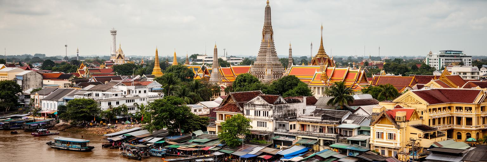
ビエンチャンは熱帯モンスーン気候にあり、雨季の豪雨と乾季の暑熱が暮らしのリズムを決めます。メコン川の水位は都市の表情を変え、低地や排水の弱い地区では道路冠水や衛生問題を起こします。強い日差しは屋外で働く人、屋台商人、配達員、建設労働者、通学する子ども、高齢者に負担をかけます。都市が低密度に広がるほど、舗装面が増え、排水路や湿地の役割が重要になります。気候リスクは自然現象だけではありません。どの地区に日陰があり、どの住宅が浸水しやすく、誰が涼しい場所へ移動でき、誰が停電や断水に耐えなければならないかという社会問題です。川辺の整備は魅力を高めますが、水を受け止める余地を失えば、別の場所に負担が移ります。緑地、街路樹、歩道、排水、廃棄物管理、公共トイレ、涼める施設は、観光景観ではなく生活を守る基盤です。ビエンチャンが穏やかな首都であり続けるためには、開発の速度だけでなく、水と熱に強い都市設計が必要です。雨季のたびに現れる浸水は、都市計画の弱点を住民に見せます。気候への備えは将来の話ではなく、毎年の学校、商売、通勤、医療を支える現在の課題です。低所得地区ほど排水や冷房への備えが弱く、病気や休業の負担を受けやすくなります。水と熱への投資は、都市の公平性を測る指標でもあります。日陰の連続も必要です。
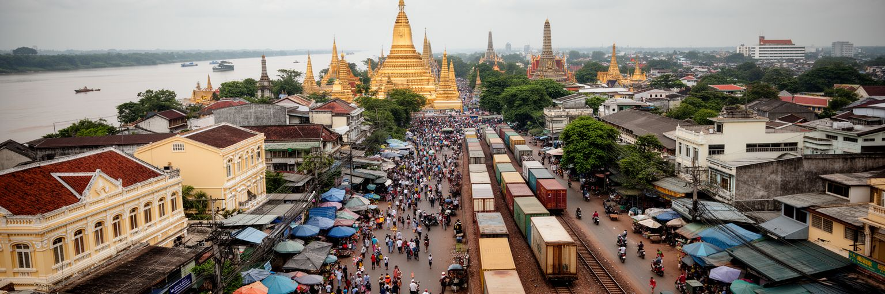
ビエンチャンはラオスの若者にとって、大学、専門学校、語学、就職、起業、移住準備の機会が集まる場所です。地方から来た学生や労働者は、首都で学び、ホテル、店、建設、物流、行政関連の仕事を探し、家族への送金や将来の移動を考えます。タイ語のメディアや国境を越える労働市場、韓国や日本への技能実習、観光業の英語需要は、若者の選択肢を広げます。一方で、物価、家賃、教育費、医療費、債務、非正規雇用は、首都生活を不安定にします。経済規模が限られるため、学歴を得ても希望する仕事が十分にあるとは限りません。都市の夜の娯楽、オンライン経済、配車サービス、カフェ文化は新しい生活感を生みますが、世代間の価値観の違いも目立ちます。ビエンチャンの社会問題を読むには、貧困を単純な不足として見るのではなく、教育への投資、国境を越える移動、家族の期待、都市での孤立、働き方の変化を合わせて見る必要があります。首都は若者に可能性を与える一方、機会の狭さも見せます。公共交通、職業訓練、手頃な住まい、文化施設、相談できる場所が整えば、若い世代は都市を通過点ではなく、暮らしを築く場所として選びやすくなります。若者が首都に残るか、タイや他国へ働きに出るかは、家族の将来にも関わります。都市の雇用政策は、国内に希望を残せるかという問いでもあります。
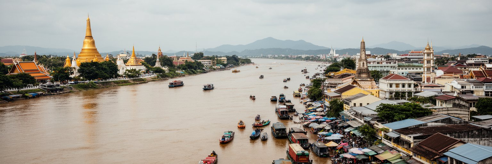
ビエンチャンは、巨大な人口や金融規模で世界を動かす都市ではありません。しかし、内陸国ラオスの首都として、メコン川、仏教、国境貿易、援助、鉄道、行政、観光、若者の移動が凝縮する重要な都市です。川辺の穏やかな夕景、タート・ルアンの金色の仏塔、低層の街路、夜市の屋台は、静かな生活感を見せます。その背後には、タイとの依存関係、中国ラオス鉄道による接続、債務と投資、地方からの流入、住宅の郊外化、気候リスク、雇用の限界があります。ビエンチャンを読むことは、急成長する巨大都市とは違う形で、国家が世界経済へ開いていく過程を読むことです。小さな首都では、開発の利益と負担が街路の距離で見えます。新しい道路や駅が期待を生む一方、家賃、土地、排水、公共交通、若者の仕事が課題になります。宗教と市場は都市の柔らかい基盤であり、住民が変化の中で支えを得る場所です。観光客にとっての穏やかさは、住民の生活条件が安定してこそ続きます。ビエンチャンの重要性は規模の小ささを超え、内陸国の首都が近隣大国、地域統合、信仰、日常生活をどう調整するかを見せる点にあります。川、寺院、橋、鉄道、市場を同じ地図で見ると、ラオスの現在が立体的に見えてきます。大きな都市の指標だけでは、この首都の役割は測れません。穏やかな表面の奥で、国家の接続、生活の安全、文化の継承が同時に試されています。